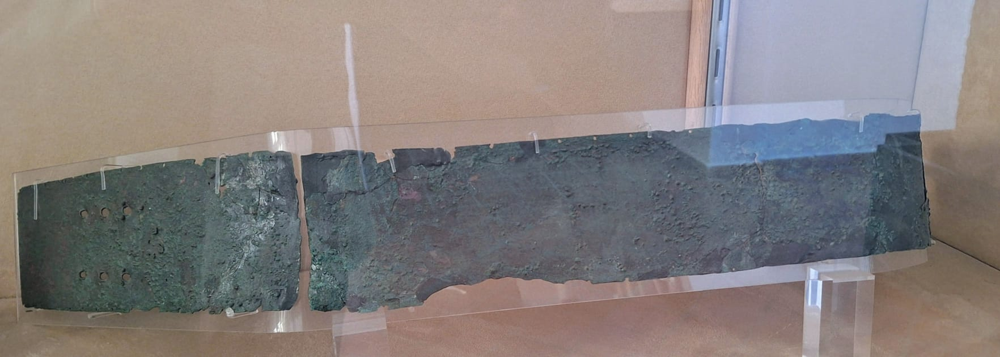
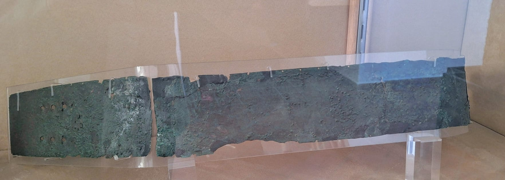
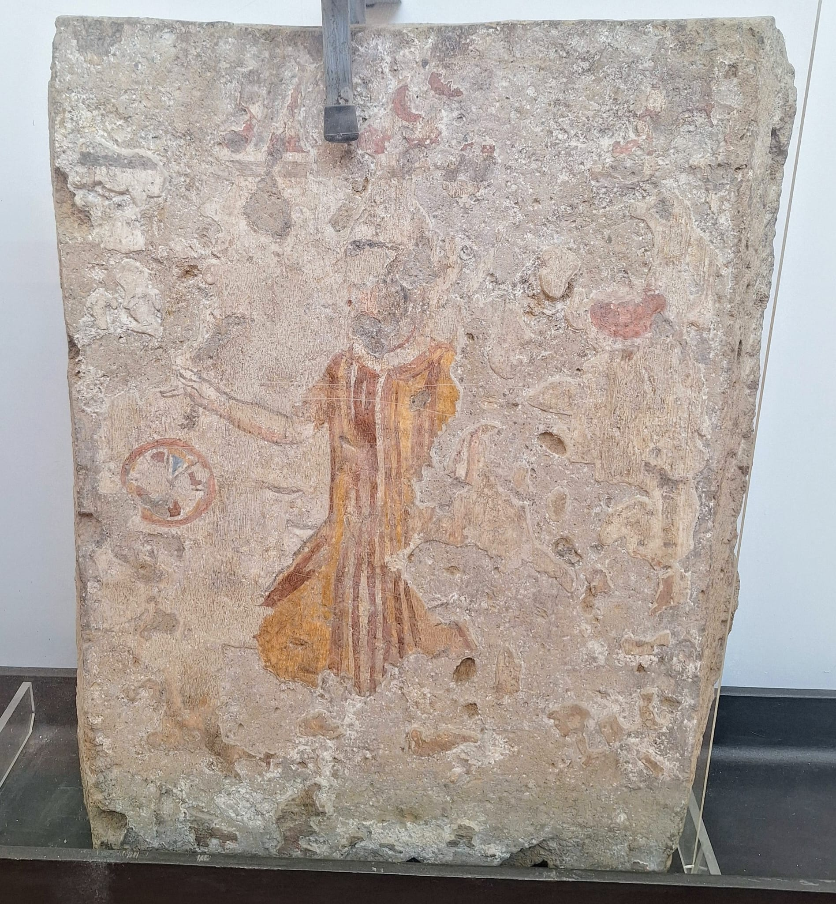
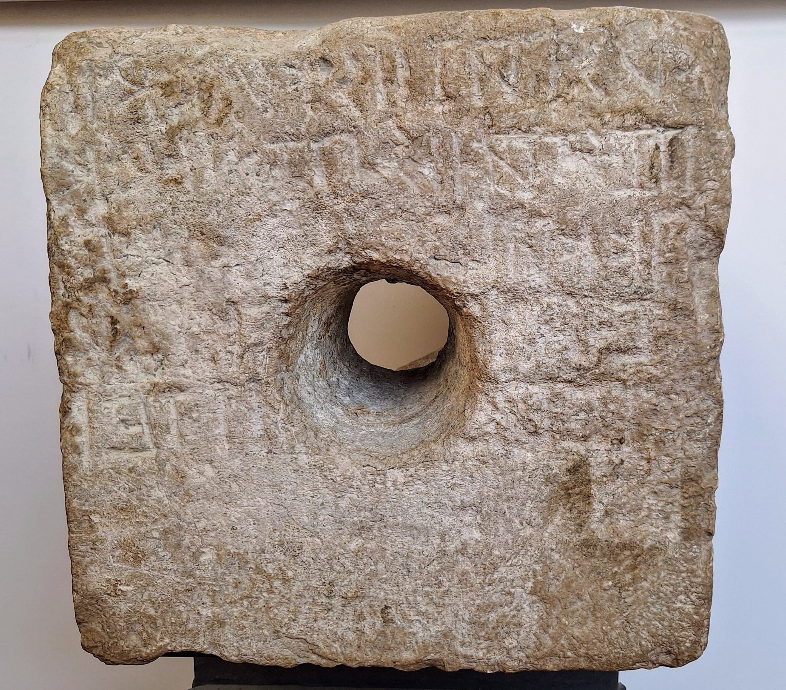

Cinturone di bronzo
(IV Secolo a.C.)
Cinturone di bronzo tipico
dell'armatura del guerriero.
Tomba a cassa dipinta

(IV Secolo a.C.)
Interno tomba a cassa

Particolare.
Home |
Le federazioni osche |
Localizzazione musei e siti |
Chi siamo |
Dove trovarci |
Diversi i musei Campani che raccontano la storia degli Osci nelle sue varianti locali. Testimonianze
osche, tombe dipinte del IV secolo a.C., corredi funerari, l’epigrafe osca del II secolo a.C. ritrovata a San Paolo Bel Sito sono nel Museo Archeologico di Nola.
E' qui esposta una copia del Cippus Abellanus, uno dei più importanti monumenti epigrafici della civiltà osca; l'originale è al
Seminario Vescovile di Nola.
|
Cinturone di bronzo (IV Secolo a.C.) Cinturone di bronzo tipico dell'armatura del guerriero. |
Tomba a cassa dipinta (IV Secolo a.C.) |
Interno tomba a cassa Particolare. |
|
Tomba della danzatrice (IV Secolo a.C.) |
Cippo con iscrizione osca da SanPaolo Belsito (II Secolo a.C.) |